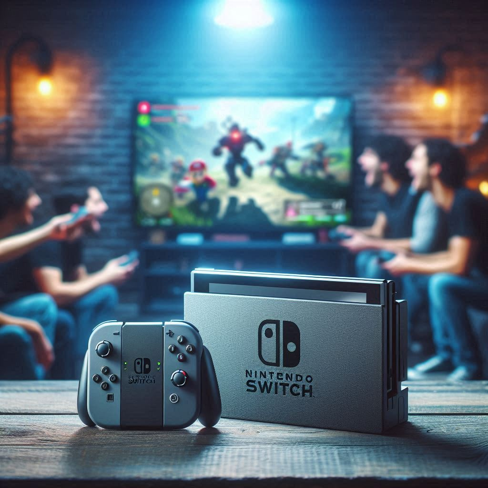

Dans un retournement de situation qui ferait rougir même Bowser, Nintendo a pris tout le monde par surprise en annonçant la sortie imminente de la Nintendo Switch 2. Préparez vos manettes (et vos portefeuilles), car la console qui succède à la star mondiale des salons et des bus arrive dans quelques jours.
Nintendo est connu pour ses annonces inattendues et souvent mystérieuses, mais cette fois, la firme japonaise a fait encore plus fort. Lors d’une présentation express diffusée sans préavis sur leurs réseaux sociaux, Nintendo a dévoilé la Switch 2, successeur tant attendu de la célèbre console hybride sortie en 2017.
Et attention, ce n’est pas une promesse pour "bientôt" façon Metroid Prime 4, mais une vraie date de sortie… d’ici les prochains jours ! Oui, vous avez bien lu. La Nintendo Switch 2 sera disponible dans certains pays dès la semaine prochaine.
Nintendo ne semble pas vouloir réinventer la roue avec la Switch 2, mais plutôt affiner une formule déjà bien rodée. Selon les premiers détails dévoilés, la Switch 2 conservera son design hybride, permettant de jouer aussi bien en mode portable qu’en mode docké sur un écran TV.
Mais les améliorations ne manquent pas :
Et évidemment, Nintendo n’a pas oublié ses joyaux : les Joy-Con. Ces derniers auraient été revisités pour une meilleure ergonomie et, espérons-le, une résistance accrue au fameux "Joy-Con drift" (les fans savent de quoi on parle).
Mais fidèle à sa réputation, Nintendo a également joué la carte de la surprise en glissant quelques détails farfelus dans sa présentation. Un exemple ? Un mode "Tetris Battle Royale IRL" où les joueurs utilisent leurs consoles comme pièces physiques pour créer une expérience unique. Non, on plaisante… Enfin, on espère.
En revanche, un nouveau service en ligne appelé "Nintendo Switch Live+" a été mentionné. Celui-ci devrait inclure un accès anticipé à des jeux classiques, ainsi qu’un mystérieux "mode premium" pour Animal Crossing. Tom Nook semble déjà frotter ses petites pattes.
Bien sûr, une telle annonce aussi soudaine a provoqué une avalanche de réactions sur les réseaux sociaux. "Je suis en train de fouiller mes économies comme si j'étais Luigi cherchant des pièces dans Luigi’s Mansion", plaisante un internaute.
D’autres, plus inquiets, se demandent si la console sera disponible en quantité suffisante. "Je ne veux pas vivre un remake de la PS5, s’il vous plaît", écrit un autre. Nintendo a cependant assuré que tout était sous contrôle, mais… c’est aussi ce qu’ils disaient pour la Mini NES.
Avec la sortie de la Switch 2 qui approche à grands pas, les gamers du monde entier sont déjà en alerte maximale. Une chose est sûre : que vous soyez fan de Zelda, Mario, ou même Pikachu, cette nouvelle console promet de raviver la magie des jeux Nintendo, tout en nous rappelant que parfois, les meilleures surprises sont celles qu’on n’attend pas.
Alors, préparez vos snacks et votre meilleur coussin gaming : le royaume de Nintendo est prêt à s’agrandir. Et rappelez-vous, pas besoin d'une Master Sword pour affronter les files d’attente. Bonne chance à tous !
Auteur : Charlie de la rédac'
Spécialiste des annonces Nintendo et fan de Mario depuis qu’il a trouvé son premier bloc "?"